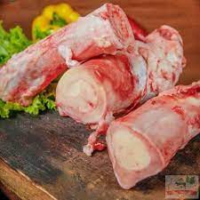
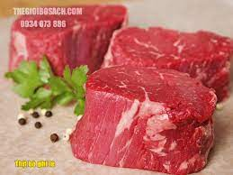
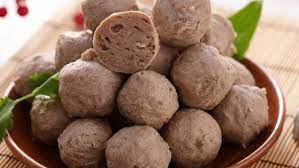
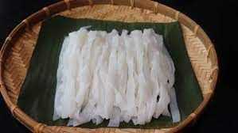
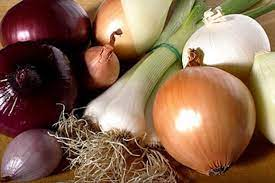
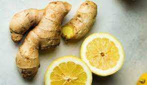
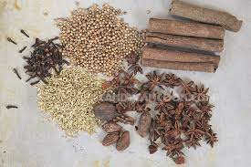
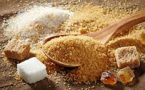

Nguyên Liệu Bao Gồm:
1.5 kg xương ống bò

200g phi lê bò

500g bò viên

Bánh phở

Hành tím củ, hành lá, hành tây

Chanh, Gừng

Đinh hương, hoa hồi, thảo quả, quế chi hoặc gia vị nấu phở

Đường phèn, muối hột, bột ngọt

Back